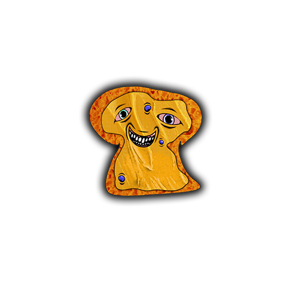
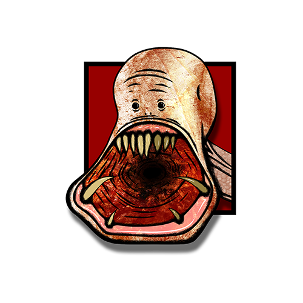
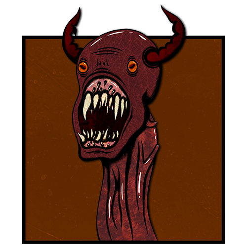

Trey Tymensen is a student at the Lethbridge College in the Multimedia Production program as well as a freelance graphic designer and content creator, and has been creating content and designs for around 7 years. The first sale he made of a design led him to pursue work selling small designs to businesses and people around his small town of Coaldale, Alberta. He had worked for multiple different businesses, such as AirTech Heating and Air-Conditioning as well as Live Electric, in both cases working as a labourer. After his time as a labourer he moved on to carpentry at All Things Cedar in Lethbridge, Alberta. He was dissatisfied with the work he was doing, so when he got out of high school he immediately enrolled in the Multimedia Production program at the Lethbridge College.
He started high school in 2018, and had ended up creating a few designs for the school such as coach uniforms, advertisements for events and services, as well as the 2021 graduation program. He graduated with honours the same year he designed the graduation program, and had also won the Personality Award as well as the Billy Derochie Memorial Scholarship. He also started at the Lethbridge College that year as well, and has been studying there since.
He had started working with Adobe products since 2013 after watching content creators play with the program for fun. His brother James Tymensen taught him the basics of colour blending, selection, spot removal, as well as other ways of messing around with the program. This led to Trey going on to practice with Photoshop exclusively for years, until he got into a video and image editing module in his middle school, St. Joseph School. He furthered his education by taking new media as well as art classes in high school. During his years of education though, he had also picked on many different Adobe programs such as Premiere, Animator (formerly Flash), and After Effects.
Learning more about video editing had led him to amateur content creation on YouTube. He started creating videos in 2019, focusing on comedic, personality-based content. He had no specific genre he worked in, he just simply made what he wanted to make online. During high school he created quite a bit of content for his classes, as well as a food safety training video produced for his culinary class, which was repurposed as educational material for later culinary classes.